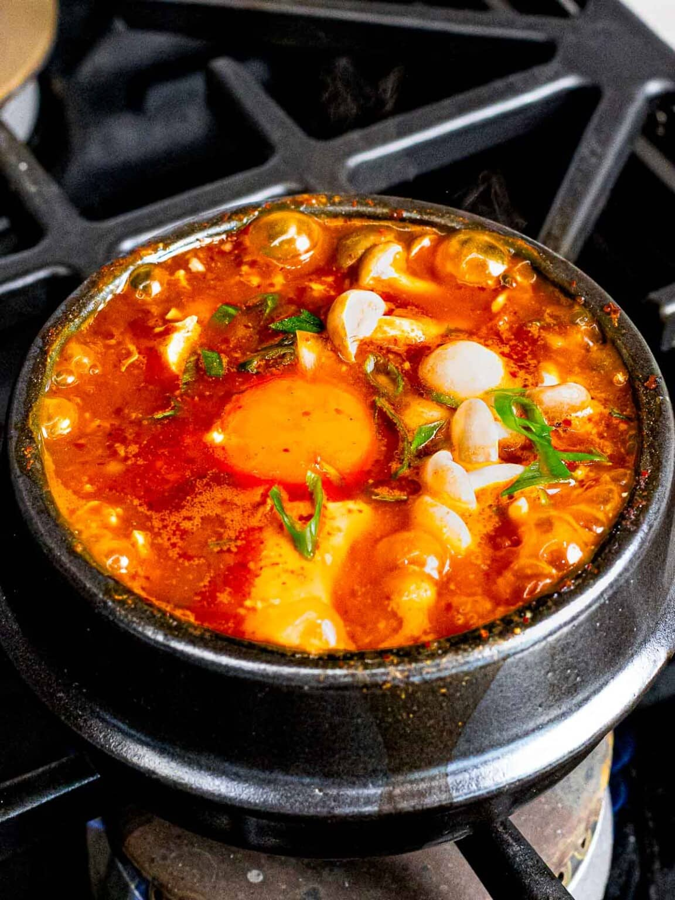

Tofu Soup

Sundubu Jjigae falls under the top list of Korean stews to try, and it's not surprising why! This stew is made with soft tofu and a mix of ingredients to come out with a tasty and refreshing soup.
- 12 ounces Korean soft tofu
- 4 ounces littleneck clams
- 3-4 banana prawns
- 3.5 ounces enoki mushrooms
- 2 small shiitake mushrooms
- 1 egg
- 1 stalk of green onion
- 1.5 cups dried kelp and anchovy stock
- 1 tbsp Korean chili oil or neutral cooking oil
- 2 tbsp Korean chili powder or korean chili flakes
- 1 tsp minced garlic
- 1/2 tbsp Korean fish sauce
- 1/2 tbsp Korean soup soy sauce
- fine sea salt
- a few sprinkles of ground black pepper
- 1/2 tsp sesame oil
- Start heating the pot on the stove over medium low heat and add the chili oil, chili powder, and garlic. Stir them well for about 1 min. Make sure not to burn the chili powder.
- Add the clams and shrimps and stir quickly to coat them with the chili sauce. Add the fish sauce and soy sauce then stir.
- Add the dried kelp and anchovy stock and boil it on medium-high heat until it starts to boil rapidly (2 to 3 mins).
- Add the tofu, mushrooms, and egg and cook them for another 2 to 3 mins. Season with salt, if required.
- Top up with the green onion, black pepper and sesame oil. Serve hot with Korean rice and side dishes (banchan).